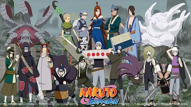
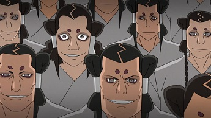
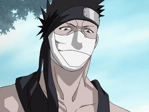
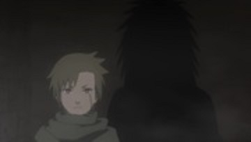
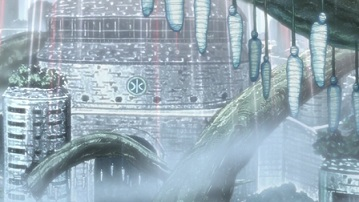
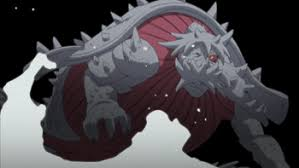
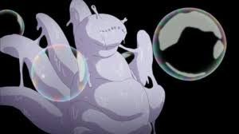

|
|
|
|
|
|
Kirigakure No sato.
|
|
Kirigakure (霧隠れの里, Kirigakure no sato, que significa literalmente
"Aldea Oculta de la Niebla"), también conocida como la Aldea de la
Neblina Sangrienta (血霧の里,
Chigiri no sato) es una aldea ninja que se encuentra en el
País del Agua. Al ser una de las "grandes aldeas shinobi", tiene un
Kage, que es el líder de la aldea conocido con el titulo de
Mizukage, hasta ahora han sido seis, el más reciente es
Chōjūrō. Los shinobis de esta aldea son muy hábiles en el uso de técnicas de
Elemento Agua.
El clima es bastante húmedo, lo que facilita la formación de niebla, Kirigakure posee bosques densos, la aldea esta situada entre montañas, esto la hace mas difícil
de encontrar por parte de extranjeros.
La arquitectura en Kirigakure esta compuesta de varios edificios cilíndricos ideados para la correcta canalización de las lluvias y que favorece su ocultación
en la naturaleza, el palacio del Mizukage es la construcción más amplia y grande situada en la zona central de la villa. El pueblo está rodeado por una espesa niebla.
Historia.
No se sabe mucho sobre los inicios de
Kirigakure, sólo se sabe que tuvo un conflicto con
Iwagakure causado por el incidente del
paso de Yosuga, esto generó un odio que duró muchísimos años; tanto que ese odio complicó la formación de la
Alianza Shinobi. A pesar de esto recibieron muchos elogios por tener una gran fuerza militar, además de que se dice que
Akatsuki fue creado en esta misma aldea siendo esta hipótesis la que creó una gran desconfianza entre las aldeas hacia
ella.
|
| 
Ánime
Manga
|
Información
- Fundador: Byakuren.
- Nación: País del Agua.
- Lider: Mizukage.
|
Mizukage's
- Primero: Byakuren.
- Segundo: Gengetsu Hōzuki.
- Tercero: Tercer Mizukage (Sin nombre conocido).
- Cuarto: Yagura.
- Quinto: Mei Terumī.
- Sexto: Chōjūrō.
|
|
|
Tercera Gran Guerra Mundial Shinobi.
No se sabe muy bien porqué, pero Kirigakure participó en esta guerra, y tuvo un enfrentamiento contra
Konohagakure, donde
Kakashi Hatake acabó con un sujeto de valiosa información para la niebla, como
Rin. Poco después, el escuadrón que había realizado la batalla fue víctima de una
masacre por parte de
Obito Uchiha.
|
|

|
Invasión del clan Kaguya.
Desde hace mucho tiempo la villa ha sufrido conflictos internos, uno de ellos fue el ataque del
Clan Kaguya los cuales invadieron a
kirigakure por el simple hecho de saciar sus deseos de lucha, pero la mayoría fueron asesinados por los
superiores de la aldea siendo
Kimimaro el único superviviente. Debido a la eficacia en el campo de batalla que aquellos con
Kekkei Genkai han tenido en tiempos de guerra, los ninjas de
Kirigakure y la mayoría de los habitantes de
la Tierra del Agua consideraron el tener habilidades genéticas únicas como una maldición, y de hecho las persiguieron y discriminaron en el pasado.
|
|
Aldea Oculta de la Niebla Sangrienta.
Durante el mandato del
Cuarto Mizukage, Yagura, la academia ninja empezó a utilizar un ritual de graduación en el cual los alumnos
debían enfrentarse cara a cara en una lucha a muerte, siendo por esto que adquirió el nombre de la
"Aldea de la Niebla Sangrienta" (血霧の里, Chigiri no Sato). Mediante este método de iniciación se pretendía
anular los sentimientos de los individuos creando así perfectas armas humanas. Después de un tiempo se formó un grupo de personas llamadas
los Siete Espadachines de la Niebla, los cuales eran personas que empleaban espadas especiales y la
mayoría eran escogidos casi siempre de los estudiantes sobresalientes de la prueba de la Academia.
|

|
|

|
Reinado de Terror de Yagura.
Esta época fue muy agitada para la población debido a que resultaba que
Yagura el líder de la Aldea estaba siendo manipulado por
Obito Uchiha, al cual al parecer lo único que le importaba era que se cumpliera las misiones sin
importar los riesgos de los participes. Debido a este régimen varios ninjas iniciaron movimientos golpistas con intención de derrocar al poder.
Kisame Hoshigaki mató a su superior y se adueñó de
Samehada, a pesar de eso el
Mizukage no tomó acciones contra esto ya que el ninja empezó a trabajar directamente para él,
pero llegó un momento en que asesinó a varios miembros importantes del escuadrón de inteligencia causando su exilio de la aldea. Debido a esta asociación, muchos
creyeron que el
AkatsukiAkatsuki fue creado en
Kirigakure en lugar de
Amegakure.
Durante ese tiempo también fue cancelada la prueba de graduaciones ya que
Zabuza Momochi mató a toda a su clase sin aún tener la edad para graduarse, después de ese acto,
poco tiempo después se convirtió en parte de
los Siete Espadachines de la Niebla y además llegaría un momento en que atentó contra el líder
de su aldea.
|
Tragedia del Paso de Yosuga.
Diez años antes del inicio de la
Cuarta Guerra Mundial Shinobi, un incidente entre
Kirigakure e
Iwagakure dio lugar, dando como resultado la traición a
Kirigakure por parte de los shinobi de
Iwa, creando un odio de una década.Este incidente fue protagonizado por la traición de varios ninjas
de la
RocaRoca al Equipo de
Ganryū, que fue enviado a recuperar unos valiosos pergaminos en manos de
Kumogakure.
|
|
Cuarta Guerra Mundial Shinobi.
Una vez realizado el
Tsukuyomi Infinito,
Madara Uchiha utiliza
Dios: Nacimiento de un Mundo de Árboles para atrapar a todos los habitantes de la aldea en el Genjutsu por
completo.
|

|
Posesión de las Bestias con Cola.
Kirigakure ha tenido en su posesión a dos bestias con colas: una de ellas fue la
Tortuga de Tres Colas la cual sería sellada dentro del cuerpo de
Yagura, el cuarto Mizukage, pero porque Yagura murió este quedó libre y más tarde fue tomada por
Akatsuki.
Por último también tuvieron al
Seis Colas, que sería encerrado dentro de
Utakata, en el anime este se fue de su aldea después de asesinar a su maestro y fue capturado por
Pain de
Akatsuki.
|
|
Sambi o Isobu

|
Saiken o Rokubi

|
Clanes Conocidos
- Clan Hōzuki.
- Clan Kaguya.
- Clan Yuki.
|
Curiosidades
- Según el segundo Databook, Kirigakure posee una población y poder económico de 2 estrellas y un poder militar de 3 estrellas.
- Que
Mei Terumi, la anterior
Mizukage tenga dos
Kekkei Genkai da a entender de que el repudio de Kirigakure a las personas con Técnicas de Linea
Sucesoria se ha dejado atrás.
- El atuendo normal de los ninjas de este pueblo gira principalmente en torno a un material desprendido que el shiniobi llevan alrededor de sus
muñecas y las piernas que se funden en sus sandalias. Por debajo de esta, llevan un traje de cuerpo completo de color negro, además llevan un chaleco de antibalas
color gris.
- Su nombre está basado en Kirigakure Saizō, un personaje de ficción que fue un ninja y asesino.
- Curiosa y comúnmente un gran número de
Mei Terumininjas renegados vienen de este pueblo. En la aldea hay una clasificación única de ninjas conocidos como cazadores con la función específica de la eliminación de estos desertores.
- Durante la segunda pelea entre
Zabuza Momochi y
Kakashi Hatake, el primero usó un
kunai con un borde de la hoja curva hacia adentro, haciendo que el punto más agudo y más adecuado para apuñalar o empujar. Más tarde, en el anime, esta lámina se presenta como la variación especial de Kirigakure del
kunai estándar.
-
Kisame Hoshigaki era el único afiliado de manera natal a ésta aldea en
Akatsuki, sin contar a
Obito Uchiha, quien controlaba a
Yagura.
- En el anime
Ao No Exorcist el apellido de un personaje es Kirigakure.
- Es una villa fuertemente protegida por una niebla que la cubre por completo, seguramente se construyo allí la villa por la fuerte humedad y por estar rodeada por el mar.
- Se cree que por la muerte de
YaguraRin fue lo que ocasionó que Obito Uchiha controlara a Yagura y causara lo que sería conocido como el Reinado del Terror y, quizás la purga de los Kekkei Genkai.
- Aunque Kirigakure no participó en los últimos Exámenes Chunin en Konoha, en el anime se puede ver cómo había un ninja de esta aldea en las pruebas.
- Cuando
Obito Uchiha masacra a todos los ninjas de esta aldea, uno de estos le grita:
"Nadie puede contra la Aldea de la Niebla Sangrienta", lo que pone en duda si fue Obito quien verdaderamente inició el Reinado del Terror del
Cuarto Mizukage.
|
|
{kind=link}
{kind=link}
{kind=link}
{kind=link}
{kind=link}
{kind=link}
{kind=link}
{kind=link}